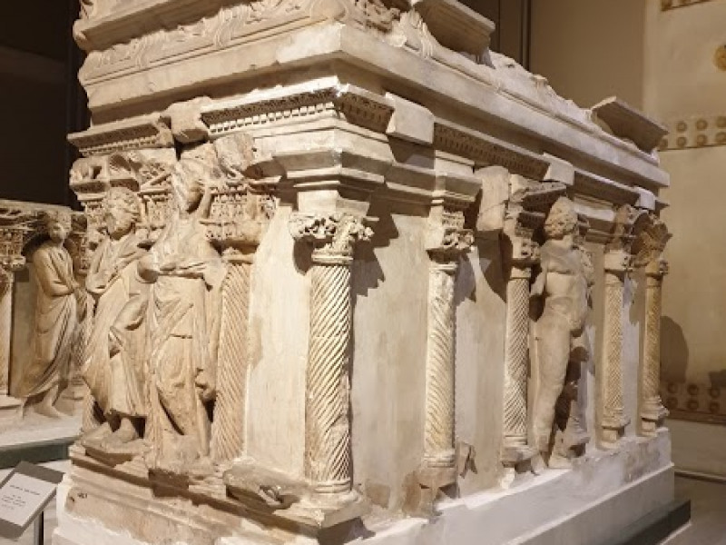
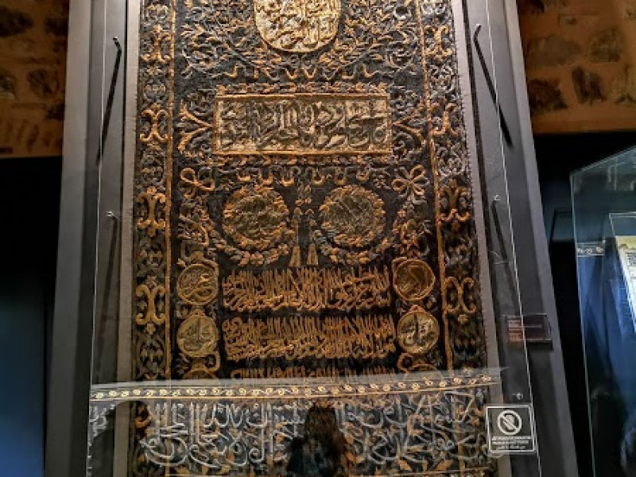
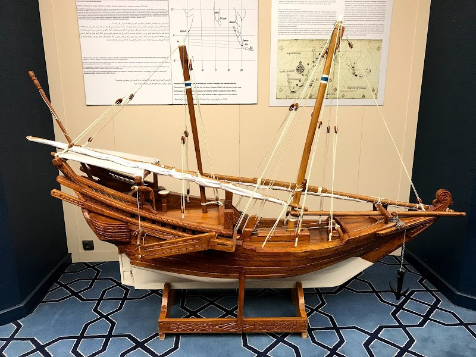
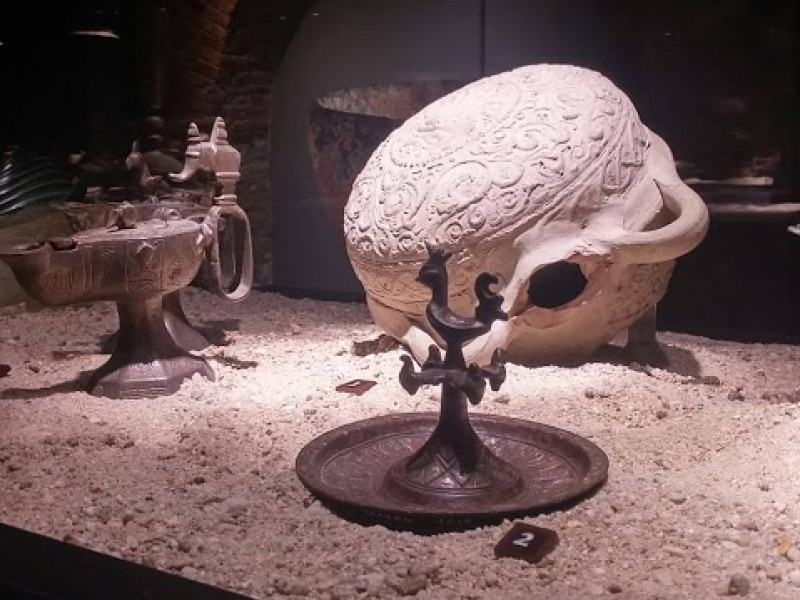

TOPKAPI SARAYI MÜZESİ
ssssssssssssssssssssssssssssssssssssssssssssssssssssssssssssssssssssssssssssssssssssssssssssssssssssssssssssssssssssssssssssssssssss

Günümüzde İstanbul'un en önemli kültürel yapılarından biri olarak bilinen Topkapı Sarayı, inşaasının ardından 1. Abdülmecid dönemine kadar yani yaklaşık dört yüzyıllık bir süre boyunca, tüm Osmanlı sultanlarına ev sahipliği yapmıştır.Günümüzde Topkapı Sarayı Müzesi’nde, Avrupa Porselenleri ve Camları, Bakır ve Tombak Mutfak Eşyası, Çin ve Japon Porselenleri, Gümüşler, Hırka-i Saadet Dairesi ve Kutsal Emanetler, İmparatorluk Hazinesi, İstanbul Cam ve Porselenleri, Padişah Elbiseleri, Padişah portreleri ve resimleri, Silahlar koleksiyonları bulunmaktadır.
Osmanlı monarşisinin 1922'de kaldırılmasının ardından Topkapı Sarayı, 3 Nisan 1924'te halifeliğin kaldırılması yasası ile birlikte Mustafa Kemal Atatürk'ün emriyle müzeye dönüştürülmüştür. Topkapı Sarayı Müzesi giriş ücreti 72 ₺'dir. İndirimli giriş ücret bilgisi bulunmamaktadır. Bu müzede MüzeKart geçerlidir.
İSTANBUL ARKEOLOJİ MÜZESİ
ssssssssssssssssssssssssssssssssssssssssssssssssssssssssssssssssssssssssssssssssssssssssssssssssssssssssssssssssssssssssssssssssssss
Günümüzde İstanbul’un Gülhane semtinde bulunan İstanbul Arkeoloji Müzeleri üç ana binadan oluşan bir müzeler kompleksidir. Bu müzeler Arkeoloji Müzesi, Eski Şark Eserleri Müzesi ve Çinili Köşk Müzesi’dir. İstanbul Arkeoloji Müzeleri’nin koleksiyonlarında Osmanlı Devleti’ne ait yerlerden toplanan, çeşitli kültürlere ait bir milyona yakın eser bulunmaktadır.
İstanbul Arkeoloji Müzeleri giriş ücreti 36 ₺'dir. İndirimli giriş ücret bilgisi bulunmamaktadır. Bu müzede MüzeKart geçerlidir.
İSTANBUL TÜRK VE İSLAM ESERLERİ MÜZESİ
ssssssssssssssssssssssssssssssssssssssssssssssssssssssssssssssssssssssssssssssssssssssssssssssssssssssssssssssssssssssssssssssssssss
Türk ve İslam Eserleri Müzesi (TIEM), ülkemizde Türk-İslam eserlerinin bir arada bulunduğu ilk müzedir. Müze ilk kez 1914 yılında Mimar Sinan’ın en önemli yapılarından Süleymaniye Camii'nin "Evkaf-ı İslamiye Müzesi" (İslam Vakıflar Müzesi) adıyla imaret binasında kapılarını ilk kez açmıştır. 1983 yılında Sultanahmet Camii Meydanı'nın batısındaki İbrahim Paşa Sarayı'na taşınmıştır. Sultan sarayları dışında, müze binası günümüze kadar ulaşan en eski saray yapılarından biridir.İstanbul Türk ve İslam Eserleri Müzesi giriş ücreti 42 ₺'dir. İndirimli giriş ücret bilgisi bulunmamaktadır. Bu müzede MüzeKart geçerlidir.
İSLAM BİLİM VE TEKNOLOJİ TARİHİ MÜZESİ
ssssssssssssssssssssssssssssssssssssssssssssssssssssssssssssssssssssssssssssssssssssssssssssssssssssssssssssssssssssssssssssssssssss
İslam Bilim ve Teknoloji Tarihi Müzesi ziyaret saatleri şu şekildedir. Pazartesi 09:00-18:00, Salı 09:00-18:00, Çarşamba 09:00-18:00, Perşembe 09:00-18:00, Cuma 09:00-18:00, Cumartesi 09:00-18:00, Pazar 09:00-18:00. İslam Bilim ve Teknoloji Tarihi Müzesi giriş ücreti 12 ₺'dir. İndirimli giriş ücret bilgisi bulunmamaktadır. Bu müzede MüzeKart geçerlidir.
REZAN HAS MÜZESİ
ssssssssssssssssssssssssssssssssssssssssssssssssssssssssssssssssssssssssssssssssssssssssssssssssssssssssssssssssssssssssssssssssssss
Rezan Has Müzesi'nin kültür ve sanat dünyasına girişi, 11. Doğu Halı Konferansı'nın açılış sergisi olan “Zamansız Sadelik” sergisi ile gerçekleştirildi. 2007 yılından beri yoğun müze çalışmaları çerçevesinde sergilere ve kültürel etkinliklere ev sahipliği yapan Rezan Has Müzesi, 17. yüzyıla tarihlenen Osmanlı yapısı ve 11. yüzyıla ait Bizans sarnıcı ile geçmişi geleceğe bağlayan bir müze alanı haline gelmiştir. Müze, 2009 yılında Cibali Tütün ve Sigara Fabrikası'na ait belge ve objeler edinerek ve yaklaşık 9.000 yıllık bir geçmişe sahip arkeolojik eserler koleksiyonuyla koleksiyonunu zenginleştirdi. Rezan Has Müzesi giriş ücreti 5 ₺'dir. İndirimli giriş ücreti 3 ₺'dir. Bu müzede MüzeKart geçerlidir.